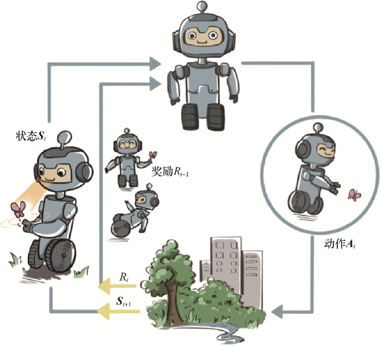
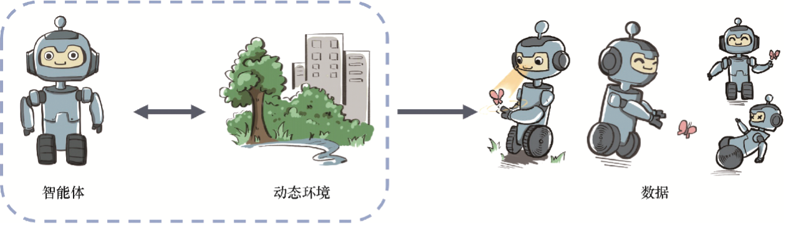

亲爱的读者，欢迎来到强化学习的世界。初探强化学习，你是否充满了好奇和期待呢？我们想说，首先感谢你的选择，学习本书不仅能够帮助你理解强化学习的算法原理，提高代码实践能力，更能让你了解自己是否喜欢决策智能这个方向，从而更好地决策未来是否从事人工智能方面的研究和实践工作。人生中充满选择，每次选择就是一次决策，我们正是从一次次决策中，把自己带领到人生的下一段旅程中。在回忆往事时，我们会对生命中某些时刻的决策印象深刻：“还好我当时选择了读博，我在那几年找到了自己的兴趣所在，现在我能做自己喜欢的工作！”“唉，当初我要是去那家公司实习就好了，在那里做的技术研究现在带来了巨大的社会价值。”通过这些反思，我们或许能领悟一些道理，变得更加睿智和成熟，以更积极的精神来迎接未来的选择和成长。
在机器学习领域，有一类重要的任务和人生选择很相似，即序贯决策（sequential decision making）任务。决策和预测任务不同，决策往往会带来“后果”，因此决策者需要为未来负责，在未来的时间点做出进一步的决策。实现序贯决策的机器学习方法就是本书讨论的主题—强化学习（reinforcement learning）。预测仅仅产生一个针对输入数据的信号，并期望它和未来可观测到的信号一致，这不会使未来情况发生任何改变。
本章主要讨论强化学习的基本概念和思维方式。希望通过本章的讨论，读者能了解强化学习在解决什么任务，其基本的数学刻画是什么样的，学习的目标是什么，以及它和预测型的有监督学习方法有什么根本性的区别。而关于如何设计强化学习算法，我们会在接下来的章节里面细细讨论。
广泛地讲，强化学习是机器通过与环境交互来实现目标的一种计算方法。机器和环境的一轮交互是指，机器在环境的一个状态下做一个动作决策，把这个动作作用到环境当中，这个环境发生相应的改变并且将相应的奖励反馈和下一轮状态传回机器。这种交互是迭代进行的，机器的目标是最大化在多轮交互过程中获得的累积奖励的期望。强化学习用智能体（agent）这个概念来表示做决策的机器。相比于有监督学习中的“模型”，强化学习中的“智能体”强调机器不但可以感知周围的环境信息，还可以通过做决策来直接改变这个环境，而不只是给出一些预测信号。
智能体和环境之间具体的交互方式如图1-1所示。在每一轮交互中，智能体感知到环境目前所处的状态，经过自身的计算给出本轮的动作，将其作用到环境中；环境得到智能体的动作后，产生相应的即时奖励信号并发生相应的状态转移。智能体则在下一轮交互中感知到新的环境状态，依次类推。

这里，智能体有3种关键要素，即感知、决策和奖励。
从以上分析可以看出，面向决策任务的强化学习和面向预测任务的有监督学习在形式上是有不少区别的。首先，决策任务往往涉及多轮交互，即序贯决策；而预测任务总是单轮的独立任务。如果决策也是单轮的，那么它可以转化为“判别最优动作”的预测任务。其次，因为决策任务是多轮的，智能体就需要在每轮做决策时考虑未来环境相应的改变，所以当前轮带来最大奖励反馈的动作，在长期来看并不一定是最优的。
我们从1.2节可以看到，强化学习的智能体是在和一个动态环境的交互中完成序贯决策的。我们说一个环境是动态的，意思就是它会随着某些因素的变化而不断演变，这在数学和物理中往往用随机过程来刻画。其实，生活中几乎所有的系统都在进行演变，例如一座城市的交通、一片湖中的生态、一场足球比赛、一个星系等。对于一个随机过程，其最关键的要素就是状态以及状态转移的条件概率分布。这就好比一个微粒在水中的布朗运动可以由它的起始位置以及下一刻的位置相对当前位置的条件概率分布来刻画。
如果在环境这样一个自身演变的随机过程中加入一个外来的干扰因素，即智能体的动作，那么环境的下一刻状态的概率分布将由当前状态和智能体的动作来共同决定，用最简单的数学公式表示则是
根据上式可知，智能体决策的动作作用到环境中，使得环境发生相应的状态改变，而智能体接下来则需要在新的状态下进一步给出决策。
由此我们看到，与面向决策任务的智能体进行交互的环境是一个动态的随机过程，其未来状态的分布由当前状态和智能体决策的动作来共同决定，并且每一轮状态转移都伴随着两方面的随机性：一是智能体决策的动作的随机性，二是环境基于当前状态和智能体动作来采样下一刻状态的随机性。通过对环境的动态随机过程的刻画，我们能清楚地感受到，在动态随机过程中学习和在一个固定的数据分布下学习是非常不同的。
在上述动态环境下，智能体和环境每次进行交互时，环境会产生相应的奖励信号，其往往由实数标量来表示。这个奖励信号一般是诠释当前状态或动作的好坏的及时反馈信号，好比在玩游戏的过程中某一个操作获得的分数值。整个交互过程的每一轮获得的奖励信号可以进行累加，形成智能体的整体回报（return），好比一盘游戏最后的分数值。根据环境的动态性我们可以知道，即使环境和智能体策略不变，智能体的初始状态也不变，智能体和环境交互产生的结果也很可能是不同的，对应获得的回报也会不同。因此，在强化学习中，我们关注回报的期望，并将其定义为价值（value），这就是强化学习中智能体学习的优化目标。
价值的计算有些复杂，因为需要对交互过程中每一轮智能体采取动作的概率分布和环境相应的状态转移的概率分布做积分运算。强化学习和有监督学习的学习目标其实是一致的，即在某个数据分布下优化一个分数值的期望。不过，经过后面的分析我们会发现，强化学习和有监督学习的优化途径是不同的。
接下来我们从数据层面谈谈有监督学习和强化学习的区别。
有监督学习的任务建立在从给定的数据分布中采样得到的训练数据集上，通过优化在训练数据集中设定的目标函数（如最小化预测误差）来找到模型的最优参数。这里，训练数据集背后的数据分布是完全不变的。
在强化学习中，数据是在智能体与环境交互的过程中得到的。如果智能体不采取某个决策动作，那么该动作对应的数据就永远无法被观测到，所以当前智能体的训练数据来自之前智能体的决策结果。因此，智能体的策略不同，与环境交互所产生的数据分布就不同，如图1-2所示。

具体而言，强化学习中有一个关于数据分布的概念，叫作占用度量（occupancy measure），其具体的数学定义和性质会在第3章讨论，在这里我们只做简要的陈述：归一化的占用度量用于衡量在一个智能体决策与一个动态环境的交互过程中，采样到一个具体的状态动作对（state-action pair）的概率分布。
占用度量有一个很重要的性质：给定两个策略及其与一个动态环境交互得到的两个占用度量，那么当且仅当这两个占用度量相同时，这两个策略相同。也就是说，如果一个智能体的策略有所改变，那么它和环境交互得到的占用度量也会相应改变。
根据占用度量这一重要的性质，我们可以领悟到强化学习本质的思维方式。
通过前面5节的讲解，读者现在应该已经对强化学习的基本数学概念有了一定的了解。这里我们回过头来再看看一般的有监督学习和强化学习的区别。
对于一般的有监督学习任务，我们的目标是找到一个最优的模型函数，使其在训练数据集上最小化一个给定的损失函数。在训练数据独立同分布的假设下，这个优化目标表示最小化模型在整个数据分布上的泛化误差（generalization error），用简要的公式可以概括为：
相比之下，强化学习任务的最终优化目标是最大化智能体策略在和动态环境交互过程中的价值。根据1.5节的分析，策略的价值可以等价转换成奖励函数在策略的占用度量上的期望，即：
观察以上两个优化公式，我们可以回顾1.4节，总结出两者的相似点和不同点。
综上所述，一般有监督学习和强化学习的范式之间的区别为：
本章通过简短的篇幅，大致介绍了强化学习的样貌，梳理了强化学习和有监督学习在范式以及思维方式上的相似点和不同点。在大多数情况下，强化学习任务往往比一般的有监督学习任务更难，因为一旦策略有所改变，其交互产生的数据分布也会随之改变，并且这样的改变是高度复杂、不可追踪的，往往不能用显式的数学公式刻画。这就好像一个混沌系统，我们无法得到其中一个初始设置对应的最终状态分布，而一般的有监督学习任务并没有这样的混沌效应。
好了，接下来该是我们躬身入局，通过理论学习和代码实践来学习强化学习的时候了。你准备好了吗？我们开始吧！